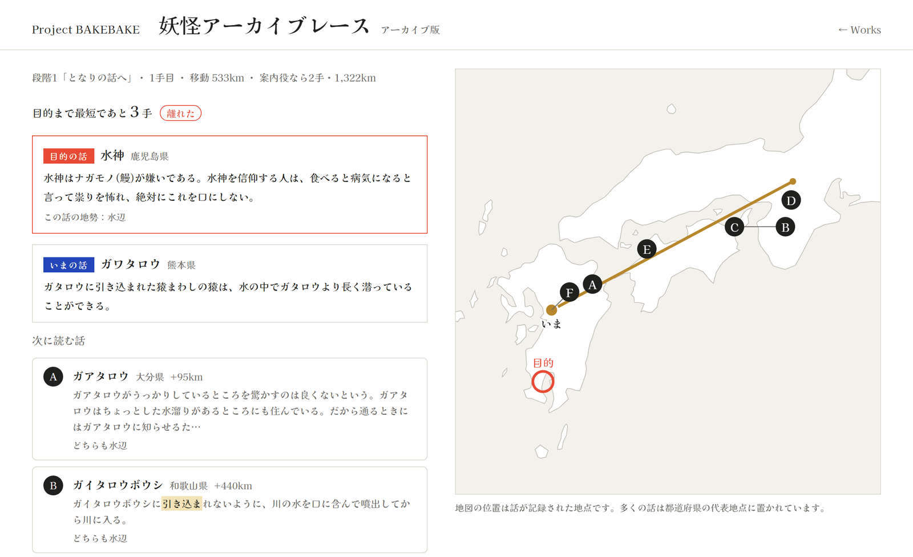

怪異・妖怪伝承データベースの話を、似ている話から似ている話へとたどって、目的の話にたどり着くゲーム。重複する話をまとめた 31,898 話のそれぞれを内容の近い話と結び、その網の上で遊ぶ。一手ごとに 6 枚の候補が出て、いまの話と共通する言葉が本文の中に示される。滋賀のガタロウから鹿児島の水神へというように、話の近さをたどる道は、地図の上では思いがけず遠くへ跳ぶ。
段階が進むと、途中で通る県（寄り道）が決められ、移動した距離も数えられる。着いたあとは、自分の道を最短の道や案内役の道と地図の上で見比べる。検索語を入れるのではなく、読んで選ぶことを繰り返してアーカイブの中を歩く。
ここでは 15 問と、その道のまわりの 2,893 話を収めたアーカイブ版を公開している。サーバーを使わずブラウザだけで動き、操作の記録はどこにも送られない。